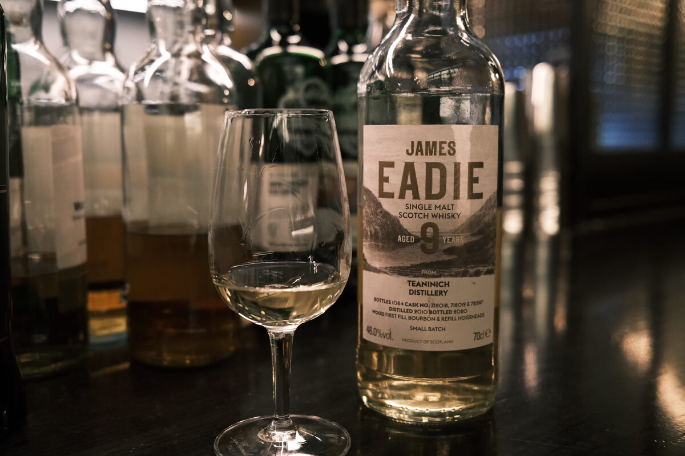

Teaninich 2010 James Eadie 9 years 46% (ex-bourbon)
Vatting of first fill and refill ex-bourbon. Casks 718018, 718019, 721587.
Colour White wine.
Nose Orchard fruits, apricots, peaches, a bit of wax. Really is diet Clynelish. Blueberry Danish. Floral. Fresh croissants. Hints of apple juice.
Palate Lemons! Oranges! Citric. Creamy malt, creamy texture. A little bit of chocolate. Wax is back. Orchard fruits, especially tart apples. Danishes and assorted fruity pastries. Floral and a little grassy. Boiled lollies.
Finish Spicy, malty. Apples and pears. Wax again. A hint of custard. Very long, warming.
Comments Cheap, more than cheerful, reminiscent of a Clynelish. 87/100.

Posted by Dominic on 14 Jun 2021